Scenario 2: Deploying Containerized Apps in Kubernetes (KinD)
In this lab, you will take the containerized application built in Lab 1 and deploy it into a Kubernetes cluster running locally with KinD (Kubernetes-in-Docker). You will learn how Kubernetes runs container workloads as Pods, how Deployments provide scalability and lifecycle management, and how Services expose applications outside the cluster.
The goal of this lab is to connect the Docker access model you learned previously (docker run -p ...) with the Kubernetes equivalent using Pods, Deployments, and Services.
Goals
By the end of this lab, you will be able to:
- Create a multi-node KinD Kubernetes cluster using a configuration file
- Understand how NodePort access works in KinD through port mappings
- Verify access to a running KinD Kubernetes cluster
- Load a locally built Docker image into KinD without pushing to a registry
- Deploy the Lab 1 Express application as a Pod
- Redeploy the same application as a Deployment
- Expose the application externally using a NodePort Service
- Understand how Kubernetes networking maps to Docker port publishing
Estimated Completion
1 Hr
Prerequisites
Before starting, ensure you have completed Lab 1 and that the following artifact exists:
- Docker image:
lab1-express:1.0
Verify locally:
Expected Results
Workspace
Kubernetes manifests for this lab will be stored under:
KinD cluster configuration will be stored under:
Tasks
Task 1: Create a Multinode Kind Kubernetes Cluster
In this task, you will create the Kubernetes cluster that will be used for the remainder of the workshop.
KinD runs Kubernetes nodes as Docker containers. This makes it ideal for labs and development environments.
To support external access to applications later in this training, we will configure port mappings between the Kubernetes nodes and your host machine.
1.1 Create the KinD configuration folder
1.2 Create the KinD cluster configuration file
Create a file named kind-cluster.yaml, with the following content:
apiVersion: kind.x-k8s.io/v1alpha4
kind: Cluster
nodes:
- role: control-plane
extraPortMappings:
- containerPort: 30000
hostPort: 30000
- containerPort: 31100
hostPort: 31100
- containerPort: 31200
hostPort: 31200
- containerPort: 31300
hostPort: 31300
- containerPort: 31400
hostPort: 31400
- containerPort: 31500
hostPort: 31500
- role: worker
- role: worker
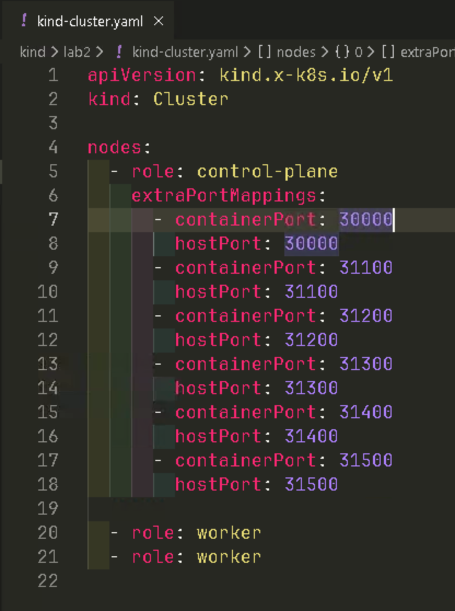
1.3 Understanding Port Mappings
In Kubernetes, applications can be exposed externally using a NodePort Service.
For example:
- Application runs inside the Pod in port
3000 - k8s exposes it externally via NodePort
30000
However, in KinD the Kubernetes nodes are Docker containers, so NodePorts are not automatically reachable unless we map them.
These mappings enable:
| NodePort | Host Port | Used For |
|---|---|---|
| 31100 | 31100 | Express App |
| 31200 | 31200 | Future. |
| 31300 | 31300 | Future. |
| 31400 | 31400 | Future. |
| 31500 | 31500 | Future. |
1.4 Create the cluster
Expected Result:
Creating cluster "my-k8s" ...
✓ Installing CNI ...
✓ Installing StorageClass ...
Set kubectl context to "kind-my-k8s"
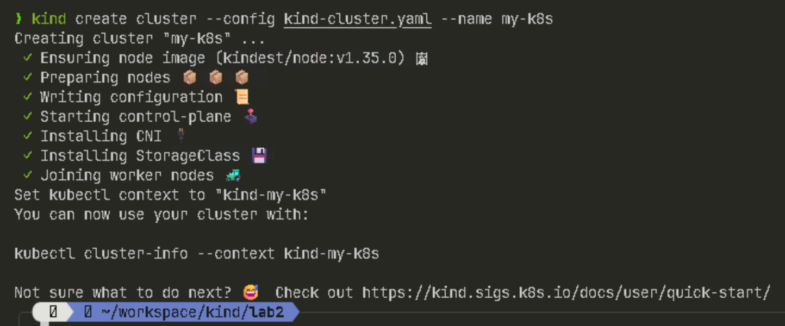
1.5 Verify the cluster is running
Expected Result
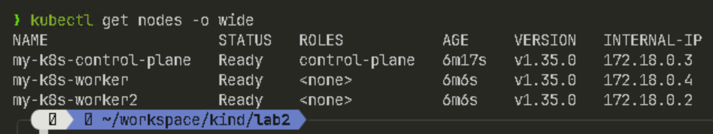
Task 2: Load the Lab 1 Container Image into KinD
One advantage of KinD is that you can deploy local images directly into the cluster without pushing to container registry.
A container registry is a centralized, secure storage system for container images, acting as a repository to store, manage, and distribute them
2.1 Load the container image into the cluster
Expected Result:
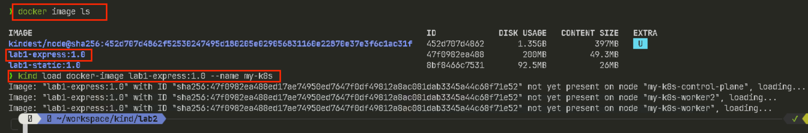
Task 3: Deploy the App as a Pod
A Pod is the simplest way Kubernetes runs a container workload.
3.1 Create a manifest folder
3.2 Create a Pod Manifest
Create pod.yaml
apiVersion: v1
kind: Pod
metadata:
name: lab1-express-pod
labels:
app: lab1-express
spec:
containers:
- name: express
image: lab1-express:1.0
imagePullPolicy: Never
ports:
- containerPort: 3000
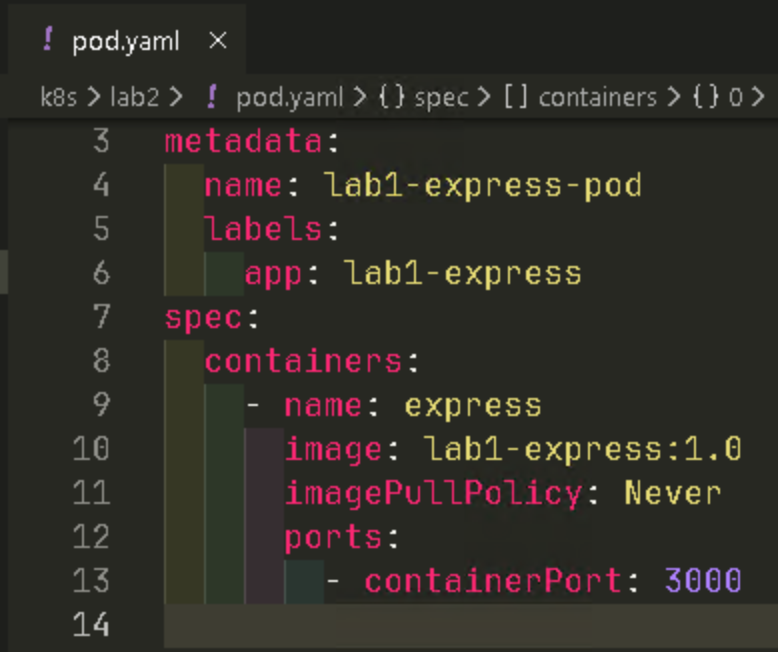
3.3 Apply the Pod
3.4 Verify the Pod is running
Expected Result:
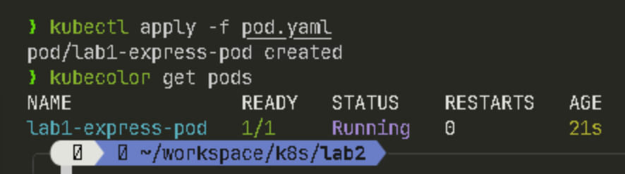
Note kubecolor is an alternative to kubectl to get a colorful output.
Task 4: Access the Pod (Port Forwarding)
Before introducing Services, Kubernetes allows temporary access via port forwarding.
4.1 Forward the Pod port locally
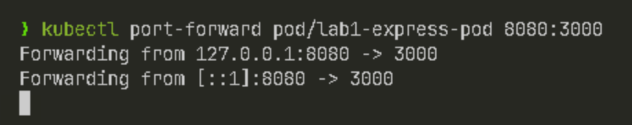
4.2 Test in a second terminal
Expected Result:
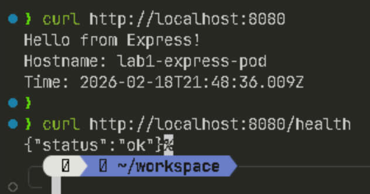
Task 5: Deploy the App as a Deployment
Deployments provide scalability, rolling updates, and self-healing.
5.1 Create the Deployment manifest
apiVersion: apps/v1
kind: Deployment
metadata:
name: lab1-express-deployment
spec:
replicas: 2
selector:
matchLabels:
app: lab1-express
template:
metadata:
labels:
app: lab1-express
spec:
containers:
- name: express
image: lab1-express:1.0
imagePullPolicy: Never
ports:
- containerPort: 3000
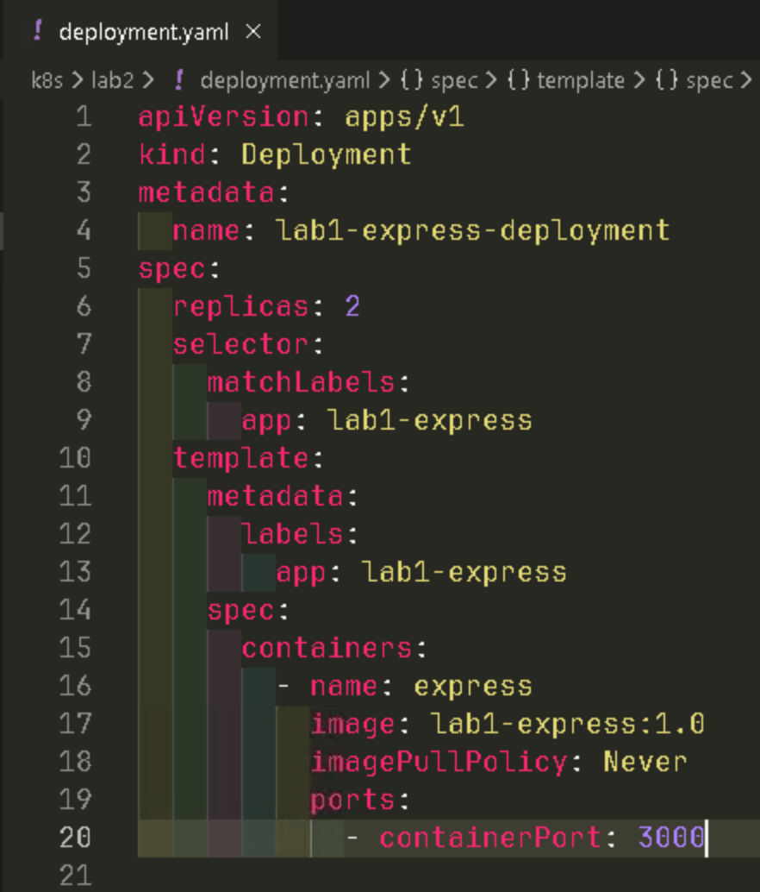
5.2 Apply the Deployment
5.3 Verify replicas
Expected Result:
Two Pods should be running
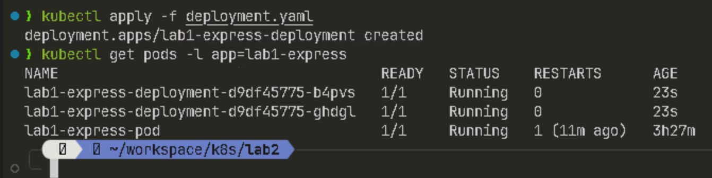
Task 6: Expose the Deployment with a Service (NodePort)
A Service provides stable access and enables external connectivity.
NodePort service exposes applications externally by opening a specific port (typically 30000-32767) on every node's IP address. Traffic sent to this port on any node is routed to the service, allowing outside access to pods even if they are not on that node. It is ideal for development, testing, or simple, non-production setups.
6.1 Create the Service Manifest
Create service.yaml
apiVersion: v1
kind: Service
metadata:
name: lab1-express-svc
spec:
selector:
app: lab1-express
type: NodePort
ports:
- port: 3000
targetPort: 3000
nodePort: 31100
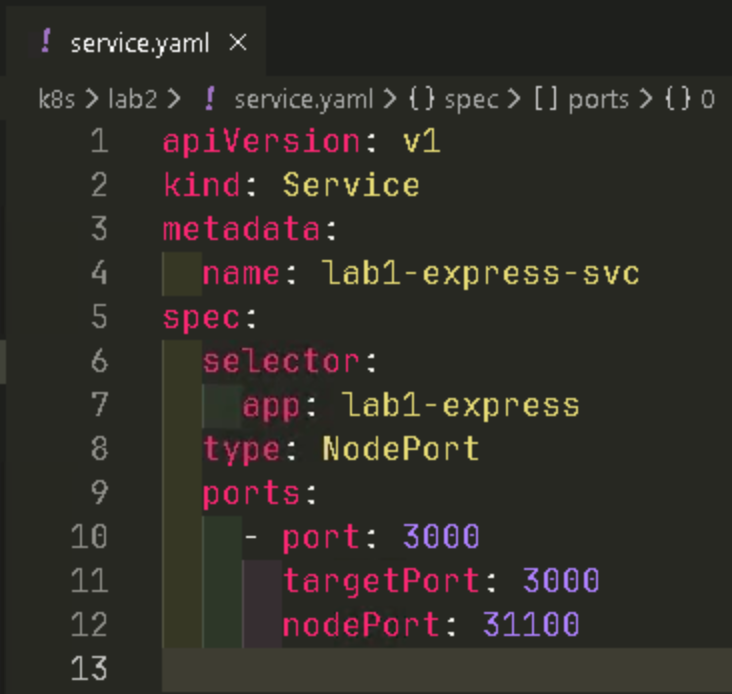
6.2 Apply the Service
6.3 Verify the Service
Expected Result:
NAME TYPE CLUSTER-IP EXTERNAL-IP PORT(S) AGE
lab1-express-svc NodePort 10.96.161.138 <none> 3000:31100/TCP 22s
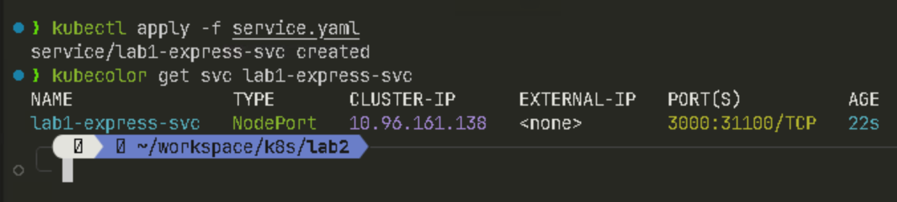
6.4 Access the app externally
Expected Result:
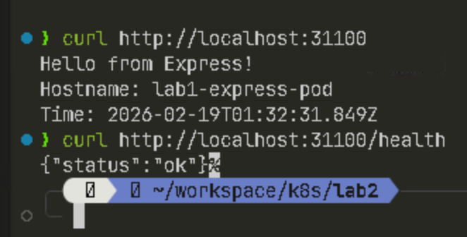
Task 7: Cleanup
This will remove the config you create during the lab. You can keep the files in your local machine for future reference
7.1 Delete k8s created resources
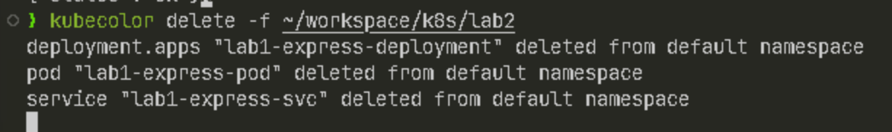
7.2 Destroy the KinD Cluster
7.3 Confirm cleanup
Expected Result:
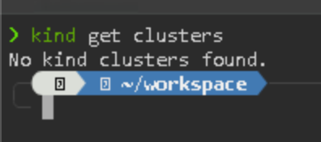
Lab Completion
Congratulations! You have completed Lab 2.
You have successfully created a Kubernetes cluster, deployed a containerized application using Pods and Deployments, and exposed it externally through a NodePort Service.